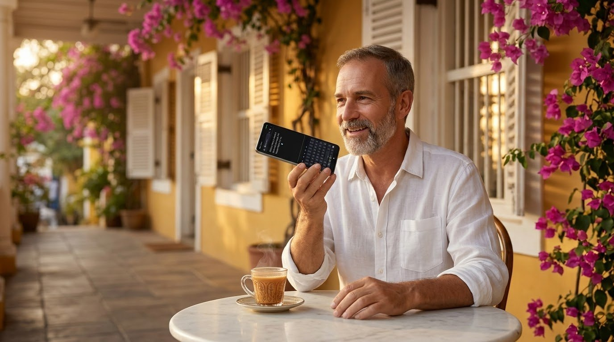
A keyboard you speak to. Press ● H and speak Croatian, press ● E and speak English: your words are written where the cursor is, in any app. Around the voice, a full keyboard made to be arranged your way.
It was made by a filmmaker who dictates all day, in two languages, on his phone. Every screen below is the real app.
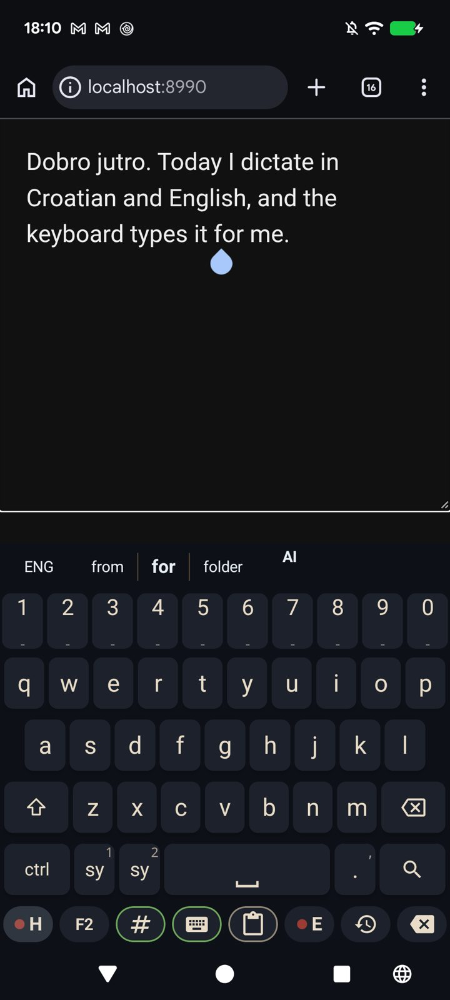
Two keys on the bottom row record: ● H for Croatian, ● E for English. The key you press is the language, so there is nothing to set first and nothing to check after. Your words land at the cursor in any app.
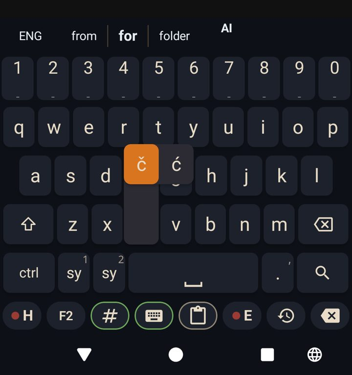
Hold c and you get č and ć, hold d for đ, s for š, z for ž. Nothing else pops up to get in your way. Any letter can carry more pop-ups: you add them yourself.
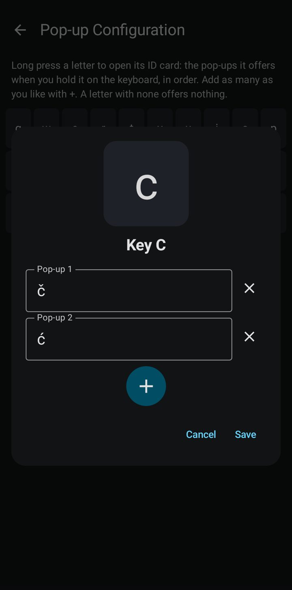
Every letter on one grid with its pop-ups printed under it. Press a letter and its ID card opens: the key big at the top, Pop-up 1, Pop-up 2, and a + for as many as you like.
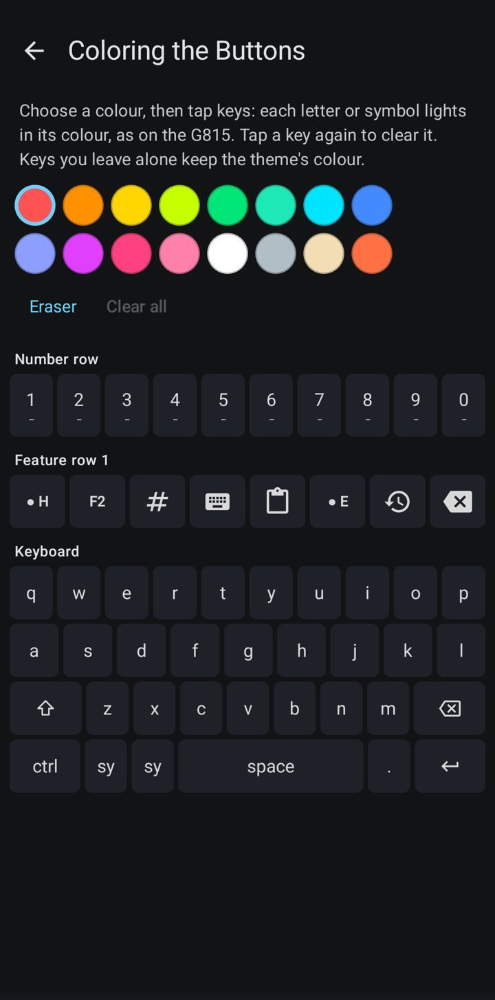
Paint the letters themselves, like a Logitech G815: choose a colour, tap the keys. You find the keys you use most by colour before you read them.
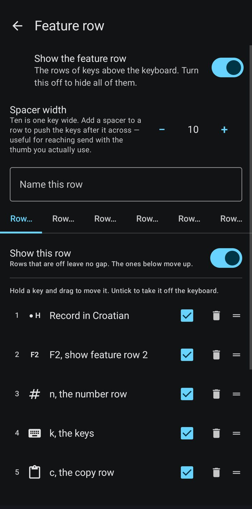
Up to six rows of feature keys above the letters, each with its own name. Drag the keys into the order your thumb wants; F1 to F6 show and hide a row from the keyboard.
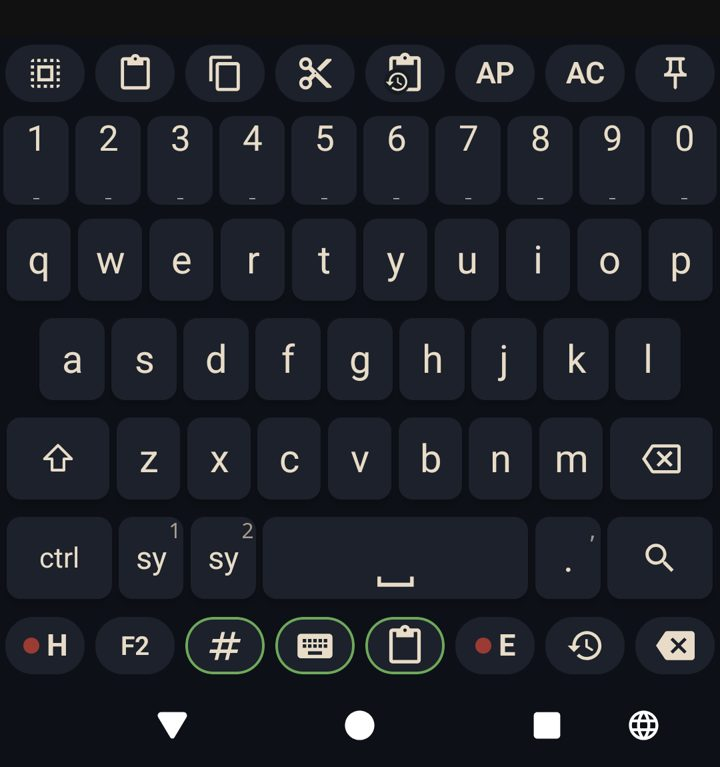
Select all, paste, copy, cut, clipboard history and two paste helpers, one tap each, right above the keys.
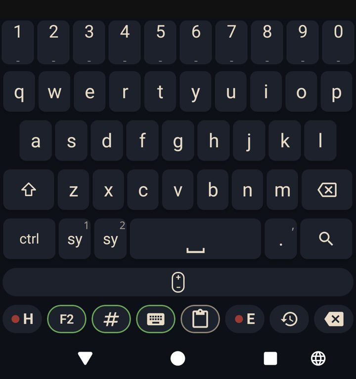
One row turns into a touchpad: slide along it to move the cursor exactly where you want it, letter by letter.
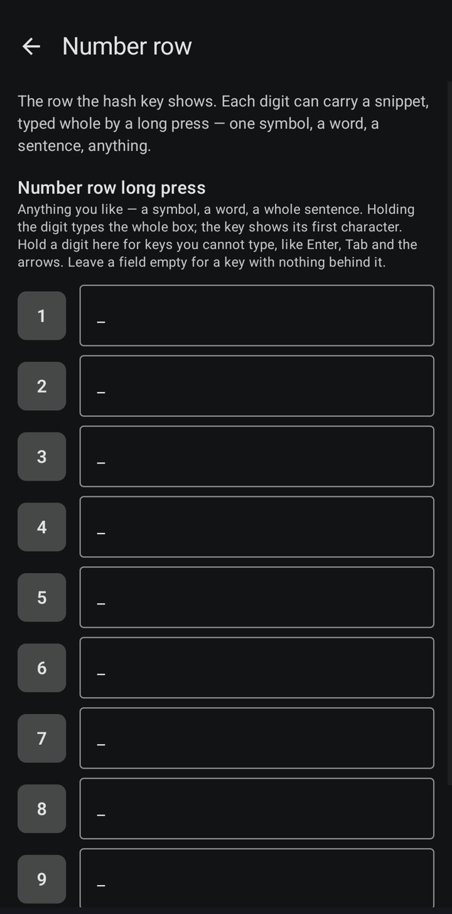
Each digit can carry a snippet: a symbol, a word, a whole sentence, typed with one long press.
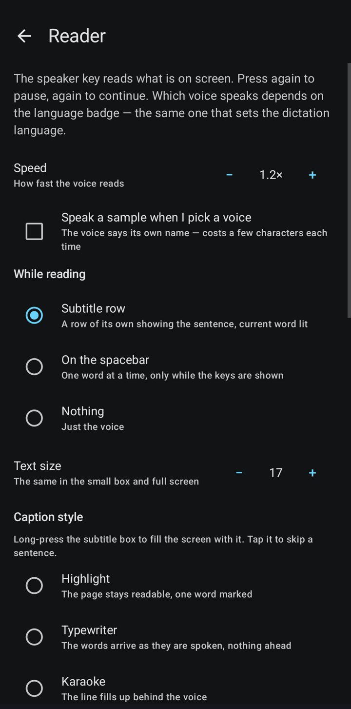
The speaker key reads what is on the screen aloud, with the current word lit in a subtitle row, on the spacebar, or full screen. Speed and text size are yours.
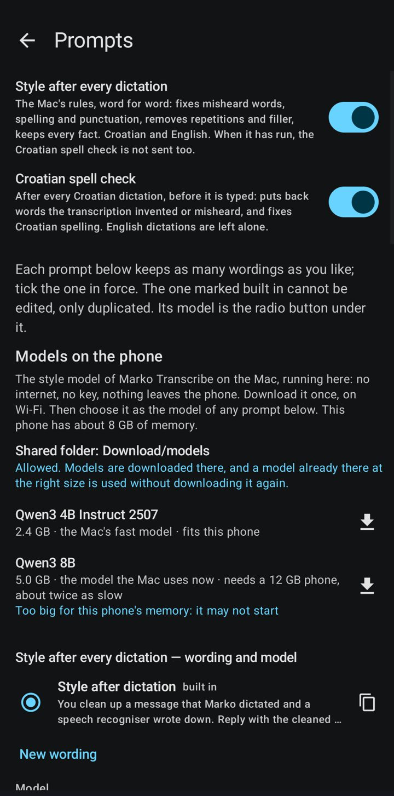
Ctrl+P proofreads, Ctrl+F reformats, and every Croatian dictation is checked for spelling before it is typed. You keep every wording of every prompt.
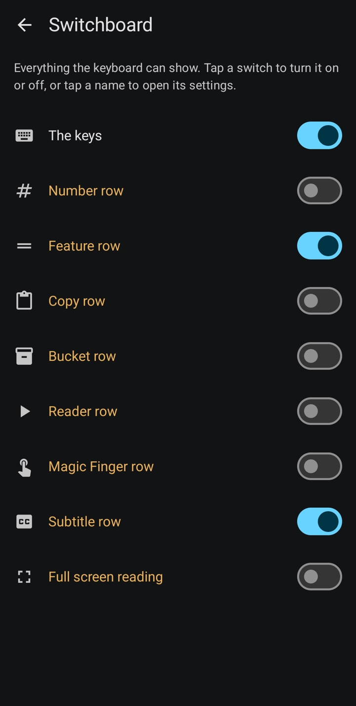
The keys, the number row, the feature rows, the copy row, the reader: one screen, one switch each. The prediction row is always there, so no key ever jumps.
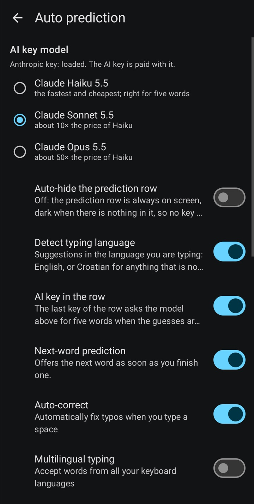
Word prediction in the language you are typing, Croatian or English, whatever the dictation key says. When the guesses are wrong, the AI key asks Claude for five words, on the model you choose: Haiku, Sonnet or Opus. Your corrections and the words it learned are on the same screen.
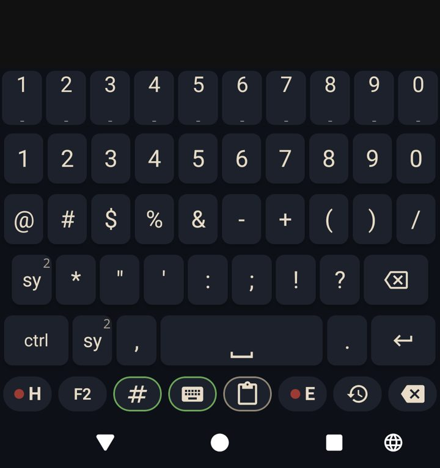
All the punctuation and symbols on two pages, one tap away from the letters.
It learns the words you write, in Croatian and English separately. When you correct a word, it learns that it was a typo and offers what you meant next time; recent words rank above old ones. A word you fix in a dictation twice is fixed for you from then on.
Hold volume up to record, hold volume down to press send. A quick tap still changes the volume.
One key presses a button on the screen for you, like Send, found by its name.
Every transcription is kept with its audio, and a recording cut short is saved, never lost.
Whole configurations saved by name and swapped in one tap.
You bring your own AssemblyAI and Anthropic keys, imported from a file, never typed. Nothing is learned in incognito fields.
For Android 8 and newer. Install it, turn it on as your keyboard, import your speech key from a file, and press ● H or ● E.
Download the latest versionFree and open source (Apache 2.0), built on Dictate and FlorisBoard. Speech to text uses your own AssemblyAI key; proofreading your own Anthropic key. If it helps you, put something in the bowl below.